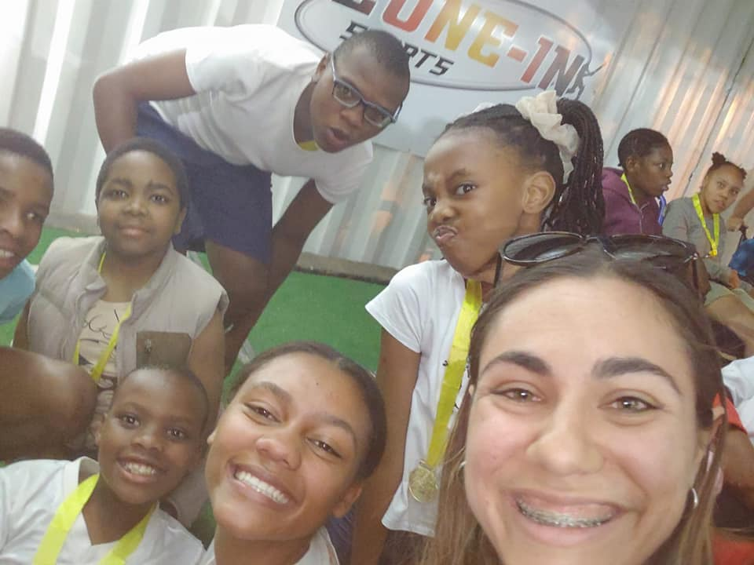
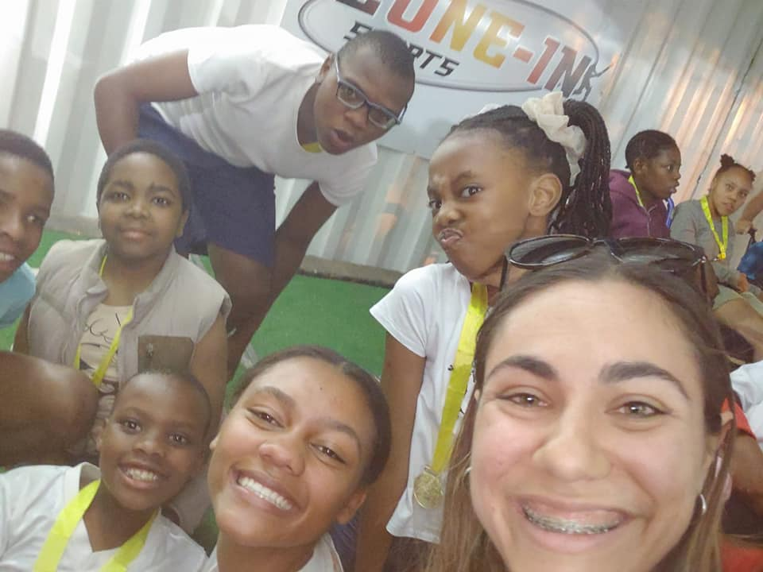

Pageant Journey
Poppie Smit began her official pageant journey when she entered the Miss Noordheuwel 2024 pageant in high school. From the moment she stepped onto the stage, she stole the show with her beautiful personality and professionalism. The way she gracefully walked the ramp, showcasing her looks from casual wear to a stunning dress, made it clear that this was where she truly belonged.
Poppie’s confidence and elegance earned her the title of Miss Noordheuwel 2024.
As she celebrated her victory, many people took notice of her, including someone who would help guide her to the next step in her pageantry dreams. Enter Cherise Loupos, who saw immense potential in Poppie and encouraged her to enter the Infinity Pageants Miss Krugersdorp competition. At first, Poppie was hesitant. She was juggling a tight schedule with her matric year and responsibilities as a Young Adults representative in her church community. However, after much consideration, trust in Heavenly Father, and support from her family and friends, Poppie took the leap and entered the pageant. Thus began her year-long journey.
Poppie’s campaign journey was nothing short of an adventure. It was filled with unforgettable moments and, of course, its share of challenges. But through it all, she persevered, remaining the strong and amazing young woman we know her to be. Throughout the campaign, Poppie, along with her mentor, took part in several charitable events, serving her beloved community. Everywhere she went, people couldn’t help but rave about her beautiful personality and her ability to brighten everyone’s day.
 

Two particular charity events stood out during Poppie’s campaign. The first was the Lions Annual Warrior Race for Westrand School Students. Here’s what she had to say about the event:
"Had an absolute blast at the Lions Annual Warrior Race for Westrand School students! 🦁💖 Witnessing their joy and eagerness to start the race was nothing short of heartwarming! Their smiles were radiant, and their excitement infectious! It was so much fun connecting with the kids, sharing laughs, and telling jokes! Like Helen Keller once said, 'Alone we can do so little; together we can do so much.' Here’s to the spirit of camaraderie and unforgettable moments! 🏅✨ A big shoutout to everyone who participated and made this event a success! Let’s do it again next year! ❤💪"
The second event was the Infinity Group Golf Day, which aimed to raise funds for a little girl battling leukemia. The event was a heartwarming success and touched Poppie deeply. These charitable experiences inspired her to step up and become the leader her community could be proud of.
During the campaign, Poppie also had the opportunity to judge a pageant, Mr. and Miss Millies. Here's what she shared about the experience:
"I had an amazing time as one of the judges at the Mr. and Miss Millies pageant! 🎉💖 It was such a joy to see the confidence and personality of all the contestants shine through. From incredible walks to stunning outfits, every moment was a celebration of talent and spirit! ✨😍 I feel so honored to have been part of this experience and can't wait to see where these incredible individuals go next! ❤👑 Thank you to Roxanne Clements - Mrs. Westrand 2024/25 and everyone involved for making this event such a success and an unforgettable experience! 💕"
As the campaign continued, Poppie learned valuable lessons from her mentors and grew as an exceptional individual. The final crowning night arrived, where she took the titles of Miss Krugersdorp and Miss West Rand. These victories marked a milestone in her journey, proving that she was on the right path.
Here’s what Poppie had to say about her triumph:
"I am overwhelmed with joy and gratitude! Saturday night was filled with magic, stress, tears, nerves, and excitement! It’s been almost a year since I started this journey, and I am incredibly grateful to each and every one of you! I have formed bonds and friendships with incredible people, and I will forever be thankful for that. Being crowned Miss Westrand, Miss Krugersdorp, and Miss Krugersdorp Charity is an absolute honor! ❤ Thank you to my parents for being such an amazing support structure and to my friends for encouraging me to be my true self. This is only the beginning! 💖🙏"
Throughout her pageantry journey, Poppie has emerged as a true role model for young girls everywhere. She continues to pursue her dreams, reaching for the stars, and inspiring everyone around her. She is the epitome of hard work, determination, and self-belief. As she steps into the next chapter of her journey with the Miss Teenager South Africa 2025 competition, we know she will continue to amaze us all.
We are so proud of everything Poppie has achieved so far, and we can't wait to see where her journey takes her!